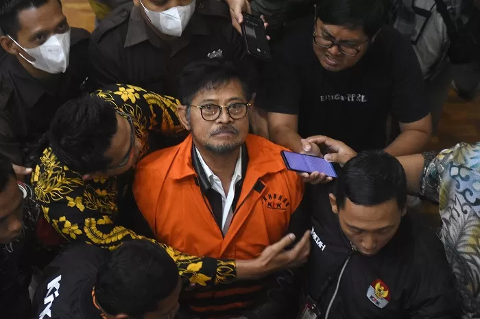

Divonis 10 Tahun Penjara, SYL: Ini konsekuensi jabatan, saya akan hadapi

Mantan Menteri Pertanian Syahrul Yasin Limpo (SYL) menganggap kasus pemerasan yang menjerat dirinya sehingga divonis dengan pidana 10 tahun penjara merupakan risiko jabatan.
"Mungkin saya sebagai manusia biasa, ini risiko leadership, ini risiko dari jabatan, dari sebuah diskresi dan jabatan yang saya ambil," ujar SYL di ruang sidang Hatta Ali di
Pengadilan Tindak Pidana Korupsi (Tipikor) pada Pengadilan Negeri (PN) Jakarta Pusat, Kamis (11/7).
SYL menyatakan siap bertanggung jawab atas perbuatan yang dinilai terbukti oleh majelis hakim.
"Saya akan pertanggungjawabkan itu adik-adikku. Teman-teman pers, saya akan pertanggungjawabkan ini dan saya akan hadapi ini dengan sebaik-baiknya," kata dia.
Dalam kesempatan itu, SYL turut menyampaikan terima kasih kepada Presiden Joko Widodo yang telah menunjuk dan memberi kepercayaan kepada dirinya sebagai Menteri Pertanian.
"Saya sampaikan terima kasih pak Jokowi memberikan kesempatan saya sebagai menteri. Apa pun akibat dari sebuah kebijakan ini, risiko jabatan bagi saya," ungkap dia.
"Saya mendapatkan hukuman 10 tahun ditambah dengan 2 tahun (dari subsider uang pengganti), bukan persoalan yang sedikit. Akan tetapi, saya merasa bangga pada saat saya menjadi menteri,
71 penghargaan nasional di antaranya diterima oleh presiden, penghargaan PBB melalui International Risk Research Institute (IRI)," sambungnya.
SYL divonis dengan pidana 10 tahun penjara dan denda sebesar Rp300 juta subsider empat bulan kurungan.
Ia juga dihukum dengan pidana tambahan berupa kewajiban membayar uang pengganti sejumlah Rp14.147.144.786 dan US$30 ribu subsider dua tahun penjara.
Vonis ini lebih ringan daripada tuntutan jaksa KPK yang ingin SYL dihukum dengan pidana 12 tahun penjara dan denda sebesar Rp500 juta subsider enam bulan kurungan ditambah
uang pengganti sejumlah Rp44.269.777.204 dan US$30 ribu subsider empat tahun penjara.
Sementara itu, masih di kasus yang sama, Direktur Alat dan Mesin Pertanian Direktorat Jenderal Prasarana dan Sarana Kementan nonaktif
Muhammad Hatta dan Sekretaris Jenderal Kementan nonaktif Kasdi Subagyono divonis dengan pidana empat tahun penjara dan denda Rp200 juta subsider dua bulan kurungan.
Vonis tersebut juga lebih ringan daripada tuntutan jaksa KPK yang ingin Hatta dan Kasdi dihukum dengan
pidana 6 tahun penjara dan denda sebesar Rp250 juta subsider tiga bulan kurungan.